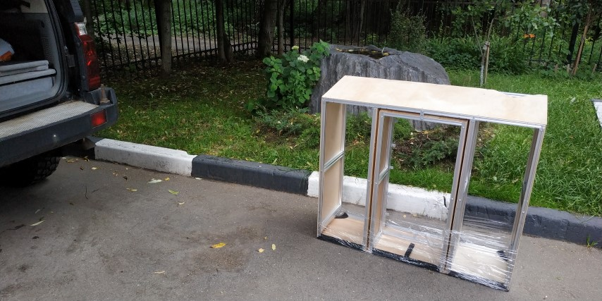
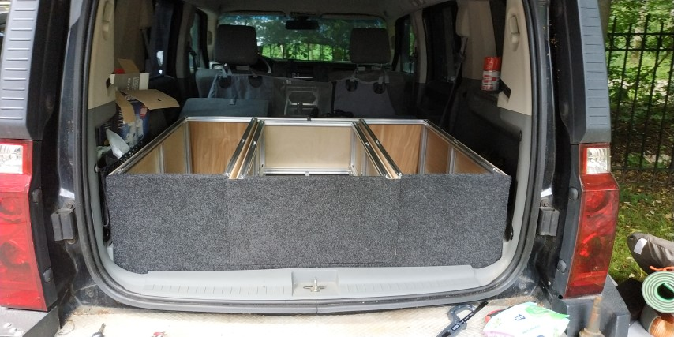
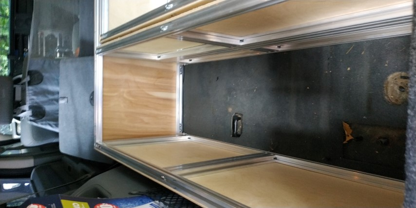
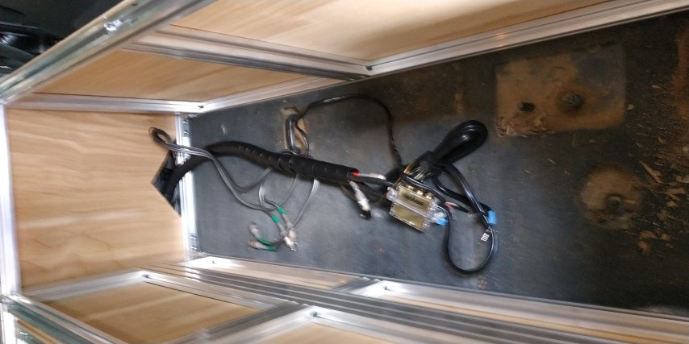
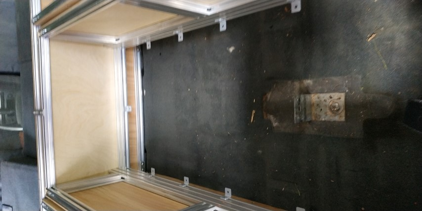
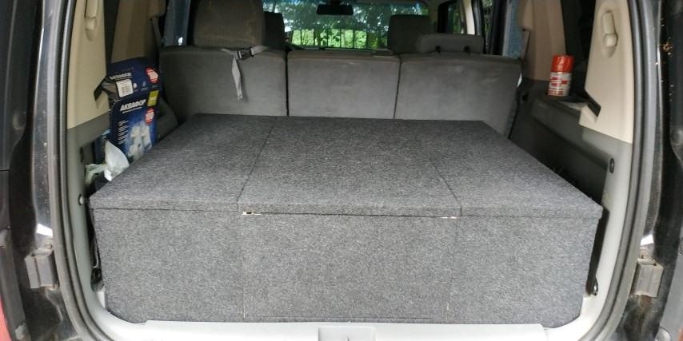
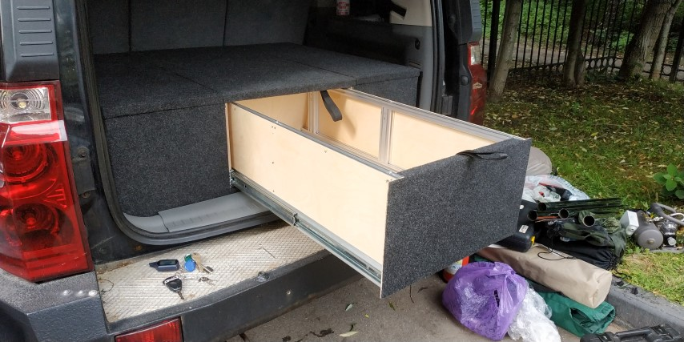
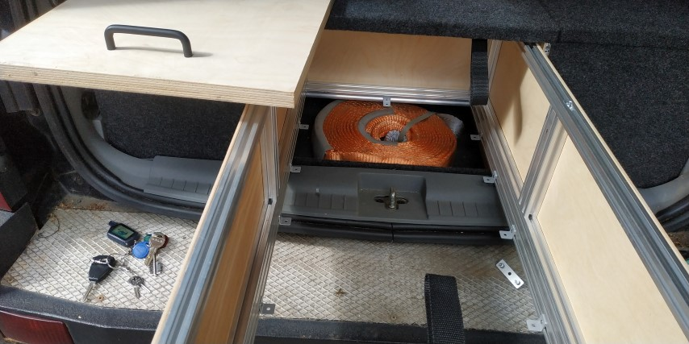
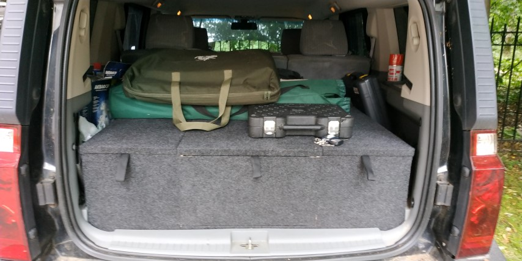
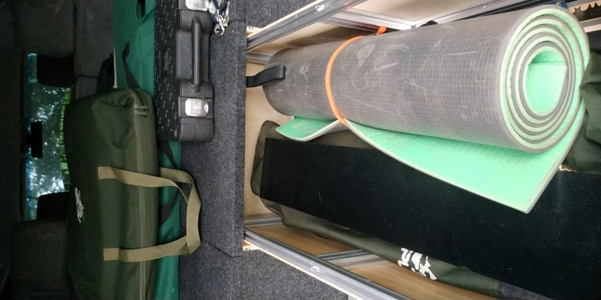

Проблема
Нужно разместить барахло в багажнике:
- Вытаскивая одно, не нужно вытаскивать еще десять.
- Вытаскивать "сверху" также легко, как и "снизу".
- "Верхнее" да не раздавит "нижнее".
- Грязное да не испачкает чистое.
Разные пластмассовые, сетчатые, матерчатые и прочие "органайзеры" не прижились: "организовывать" приходилось уже их.
Предыдущее решение для Jeep Cherokee XJ
В 2013 году изготовил Органайзер для Jeep Cherokee XJ, читать здесь.
Напомним, что будем считать далее, что:
- Органайзер - все целиком.
- Ящик - то, что выдвигается.
- Рундук - то, что не выдвигается.
- Полка - верхняя плоскость Органайзера, образованная крышками Ящика и Рундука.
- Модель - проект Органайзера в SolidWorks.
Новый Органайзер для Jeep Commander
Пожелания к новому Органайзеру по результатам изготовления старого:
- Не сверлить отверстия, а заиспользовать т.н. "конструкционный алюминиевый профиль". На нём вместо заклёпок (а сверление отверстий оказалось самой трудозатратной операцией) можно пользоваться фирменным крепежом на болтах.
- Не использовать листовой алюминий. Там, где он используется, и тонкая фанера справляется, а резать фанеру намного проще.
- Максимально заводское изготовление - заказать резы профиля и фанеры.
Предварительное проектирование в SolidWorks:
- Стоимость фирменного крепежа получалось в районе 20 тыр. Общая стоимость Органайзера выходила за 50 тыр, что очень много - можно заказать готовый из фанеры за 15-30 тыр, например.
- Была опасность, что фирменный крепеж под нагрузкой даст слабину - использовался крепеж без сверления отверстий, а его фиксация происходит фактически за счёт трения и небольшой деформации профиля под гайкой.
Что меняем в пожеланиях:
- Вместо фирменного крепежа используем шпильки - это дёшево, но снова придётся сверлить отверстия. Слабину не дадут, если только резьбу срежет. Шпильки будут сопротивляться растяжению, профиль - сжатию, фанера стенок - кручению.
- Некоторые ненагруженные соединения делаем через фирменный крепеж - так проще. Этот же крепеж используем в качестве оснастки при сборке Органайзера.
Окончательное проектирование в SolidWorks
Проект SolidWorks: Органайзер.zip
Все чертежи одним файлом: Органайзер.pdf
Далее приведены изображения всех чертежей с комментариями.
Чертёж 1. Общий вид.
Разное положение Ящика и убранные крышки. Показаны габариты багажника.

Чертёж 2. Главные размеры.
Важные размеры Органайзера и размеры популярных объектов для сравнения.

Чертёж 3. Контроль спереди.
Визуально проверяем зазоры.

Чертёж 4. Контроль сзади.
Визуально проверяем зазор между Ящиком и задней стенки Органайзера.

Чертёж 5. Фанера отсека Рундуков.
Фанера тонкая.

Чертёж 6. Фанера отсека Ящика.
Фанера тонкая.

Чертёж 7. Фанера Ящика.
Фанера тонкая, кроме днища, которое съёмное.

Чертёж 8. Фанера крышек.
Фанера толстая.

Чертёж 9. Сборочный чертеж профиля Ящика.
Нижний профиль содержит спил под углом, который нужно делать руками.

Чертёж 10. Сборочный чертеж профиля Рундука.
Отсутствующий профиль в углах - требование размещения в багажнике. В этих углах багажник вдавлен во внутрь.

Чертёж 11. Спецификация.

Особенности
- Ящик не получился быстросъемным. Использованные направляющие держат большую нагрузку (110 кг), но не позволяют 'по клику' снять Ящик.
- Дно Ящика съёмное, для использования пространства под Ящиком. Там удобно расположить редко используемые вещи.
- Для дна Ящика выбрана толстая фанера (21 мм), т.к. дно съемное и не должно сломаться при открывании с вещами.
- Для крышек Ящика и Рундука также выбрана толстая фанера (21 мм), т.к. предпологалось, что крышки должны позволить открыть себя даже при куче вещей на них и не сломаться.
- Тонкая фанера (4 мм) выбрана для стенок. Не позволяет вещам рассыпаться в стороны и сопротивляется деформации кручения.
- Профиль 20x40 выбран под стойки в каркасе - там, где будут вертикальные нагрузки на сжатие. Этого размера достаточно по опыту эксплуатации предыдущего Органайзера.
- Профиль 20x60 выбран под направляющие.
- Профиль 20x20 выбран под оставшиеся элементы каркаса. Этого размера также достаточно.
- Расположение Ящика в Органайзере по центру, для упрощения изготовления.
- Ширина Ящика изначально была больше, но это приводило к узким Рундукам и поэтому неудобным.
- Дно у Органайзера отсутствует. Можно было бы сделать, но цельным оно не получилось бы из-за торчавших из пола багажника разных болтов, которые трогать нельзя.
- Отсутствующий профиль в углах снизу спереди - требование размещения в багажнике. В этих углах багажник вдавлен во внутрь.
- Отверстия под шпильки и сами шпильки не размещались в Модели.
- Крепление Органайзера к багажнику предусматривалось через боковые стенки, но в Модели не размещалось.
- Петли из тесьмы как ручки для выдвижения Ящика и поднятия крышек, нет в Модели.
- Внешнее покрытие самоклеющимся крпетом, нет в Модели.
Изготовление
Установка в багажник
Без крышек Органайзер легко переносится одним человеком.

{kind=link}
Разместили. Идеальная посадка.

{kind=link}
Рундук слева.

{kind=link}
Рундук справа. Здесь будет стационарный компрессор.

{kind=link}
Отсек Ящика.

{kind=link}
Установили крышки.

{kind=link}
Яшик выдвинут.

{kind=link}
Дно Ящика снято, используем пространство под Ящиком.

{kind=link}
Наклали барахла на полку.

{kind=link}
Наклали барахла в Ящик.

{kind=link}
Итоги
- Дно Ящика съёмное, для использования пространства под Ящиком. Там удобно расположить редко используемые вещ - нормально.
- Для дна Ящика выбрана толстая фанера (21 мм) - успешно.
- Для крышек Ящика и Рундука также выбрана толстая фанера (21 мм) - не сломалась
- Тонкая фанера (4 мм) выбрана для стенок. Не позволяет вещам рассыпаться в стороны и сопротивляется деформации кручения - неудобно крепить, продавилась где не было крепления.
- Профили - успешно
- Расположение Ящика в Органайзере по центру, для упрощения изготовления.
- Объем Рундуков, т.е. невыдвижной объем оказался слишком большим. Достаточно половины от него. Т.е. нужно было либо делать 2 Ящика, либо один, но большой и не по центру, т.е. забрать лишний объем рундуков.
- Отсутствующий профиль в углах снизу спереди - не нужно. Привело к усложнению из-за резов по фанере
- Отверстия под шпильки и сами шпильки не размещались в Модели - самый большой геморрой, нужно длинное сверло, точное выставление
- Крепление Органайзера к багажнику предусматривалось через боковые стенки, но в Модели не размещалось - оказалось не нужно, крышки настолько тяжелые, что не дают перевернутся с выдвинутым и нагруженным Ящиком
- Петли из тесьмы как ручки для выдвижения Ящика и поднятия крышек - успешно
- Нужны подпорки под крышки для фиксации в открытом состоянии - в процессе.